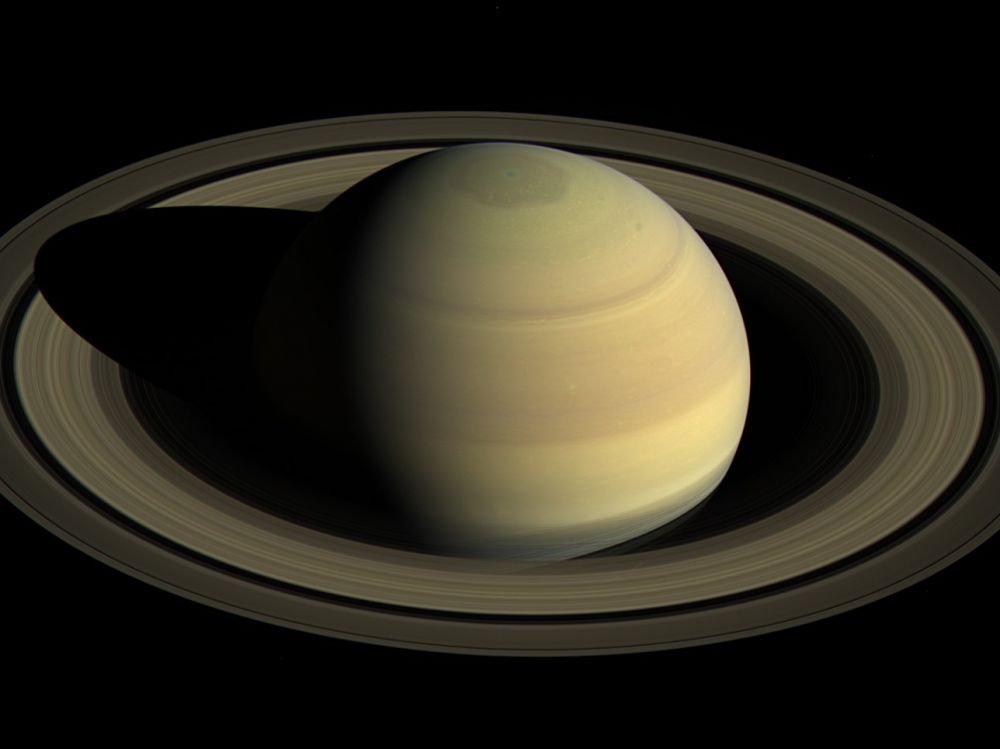
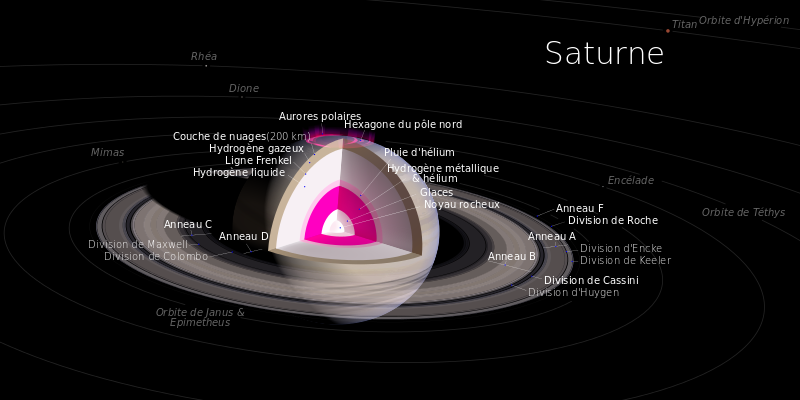

| Saturne est la sixième planète du Système solaire par ordre de distance au Soleil et la deuxième après Jupiter tant par sa taille que par sa masse. Saturne est une planète géante, au même titre que Jupiter, Uranus et Neptune, et plus précisément une géante gazeuse4,5 de type Jupiter froid comme Jupitera. D'un diamètre d'environ neuf fois et demi celui de la Terre, elle est majoritairement composée d'hydrogène et d'hélium. Sa masse vaut 95 fois celle de la Terre et son volume 900 fois celui de notre planète1. Sa période de révolution est d'environ 29 ans. Elle était au périhélie le 26 juillet 2003. Elle sera à l'aphélie le 17 avril 2018. Saturne a un éclat bien plus faible que celui des autres planètes observables à l’œil nu. Sa magnitude apparente peut atteindre lors de l'opposition un maximum de 0,439, tandis que son diamètre apparent varie de 14,5 à 20,5 secondes d'arc et que sa distance à la Terre varie de 1,66 à 1,20 milliard de kilomètres. |
 |
Saturne possède un système d'anneaux, composés principalement de particules de glace et de poussière. Saturne possède de nombreux satellites, dont cinquante-trois ont été confirmés et nommés. Titan est le plus grand satellite de Saturne et la deuxième plus grande lune du Système solaire après Ganymède autour de Jupiter. Titan est plus grand que la planète Mercure et est la seule lune du Système solaire à posséder une atmosphère significative. Plus lointaine des planètes du Système solaire observables à l'œil nu dans le ciel nocturne depuis la Terre, elle est connue depuis la Préhistoire.
|
|
|
|
Saturne a la forme d'un sphéroïde aplati : la planète est aplatie aux pôles et renflée à l'équateur. Ses diamètres équatoriaux et polaires diffèrent de près de 10 % (120 536 km pour le premier, 110 449 km pour le second, soit un diamètre moyen volumétrique de 116 464 km), conséquence de sa rapide rotation sur elle-même et d'une composition interne extrêmement fluide. Les autres géantes gazeuses du Système solaire (Jupiter, Uranus et Neptune) sont également aplaties, mais de façon moins marquée. Saturne est la deuxième planète la plus massive du Système solaire, 3,3 fois moins que Jupiter, mais 5,5 fois plus que Neptune et 6,5 fois plus qu'Uranus. En comparaison avec la Terre, Saturne est 95 fois plus massive. Son diamètre étant environ 9,5 fois plus grand que celui de la Terre, son volume est 900 fois supérieur.
Saturne est la seule planète du Système solaire dont la masse volumique moyenne est inférieure à celle de l'eau : 0,6873 g/cm3. Cela vient à dire que si on trouvait un océan assez grand pour contenir Saturne, celle-ci flotterait. Ce chiffre masque d'énormes disparités dans la répartition de la masse à l'intérieur de la planète : si son atmosphère, essentiellement composée d'hydrogène (le gaz le plus léger), est moins dense que l'eau, son noyau l'est considérablement plus.
La haute atmosphère de Saturne est constituée à 93,20 % d'hydrogène et à 6,7 % d'hélium en termes de molécules de gaz (96,5 % d'hydrogène et 3,5 % d'hélium en termes d'atomes). Des traces de méthane CH4, d'éthane C2H6, d'ammoniac NH3, d'acétylène C2H2 et de phosphine PH3 ont également été détectées. Les nuages les plus en altitude sont composés de cristaux d'ammoniac, tandis que les nuages plus bas semblent être constitués soit d'hydrosulfure d'ammonium NH4SH soit d'eau H2O15. Par rapport à l'abondance des éléments du Soleil, l'atmosphère de Saturne est sensiblement plus pauvre en hélium. La quantité d'éléments plus lourds que l'hélium n'est pas encore connue avec précision, mais on suppose que leurs proportions correspondent aux abondances initiales lors de la formation du Système solaire. La masse totale de ces éléments est estimée à 19 à 31 fois celle de la Terre, une fraction significative étant située dans la région du noyau de Saturne.
| La structure interne de Saturne serait similaire à celle de Jupiter, avec un noyau rocheux de silicates et de fer, entouré d'une couche d'hydrogène métallique, puis d'hydrogène liquide, puis enfin d'hydrogène gazeux. Des traces de glaces diverses seraient également présentes. Les transitions entre ces différentes couches seraient progressives et la planète ne comporterait pas de surface à proprement parler. La région du noyau posséderait entre 9 et 22 fois la masse de la Terre. Saturne a une température interne très élevée, atteignant probablement 12 000 K dans le noyau, et dégage, à l'instar de Jupiter, plus d'énergie qu'elle n'en reçoit du Soleil. La majeure partie de cette énergie provient d'un effet de compression gravitationnelle (mécanisme de Kelvin-Helmholtz), mais cet effet ne suffit pas à lui seul à expliquer la production thermique. Une explication proposée serait une « pluie » de gouttelettes d'hélium dans les profondeurs de Saturne, dégageant de la chaleur par friction en tombant dans une mer d'hydrogène plus léger. |
 |
Bien que saturne soit composée majoritairement d’hydrogène et d’hélium, les gaz ne représentent qu’une faible partie de sa masse car l’hydrogène devient liquide lorsque la densité dépasse 0,01 g/cm3. Cette frontière est atteinte sur une sphère correspondant à 99,9 % de la masse de Saturne. En s’approchant du cœur de la planète, la densité continue de croître jusqu’à transformer l’hydrogène en métal. Le noyau rocheux est comparable à celui de la Terre si ce n’est qu’il est plus dense. En 2004, la masse de ce noyau a été estimée entre 9 et 22 fois la masse de la Terre par une équipe d’astronomes français. Cette estimation a été effectuée à partir du champ gravitationnel et des modèles géophysiques des planètes gazeuses. De plus, on estime que le diamètre du noyau est de 25 000 km. Ce noyau est entouré d’un épais manteau d’hydrogène liquide puis, à mesure que l’on s’écarte du centre, d’hélium liquide saturé en hydrogène avant que l’hydrogène et l’hélium deviennent gazeux sur environ 1 000 km.
| Saturne, bien que calme en apparence, possède un climat violent. Au pôle sud de la planète se trouve un ouragan dont la taille est supérieure à celle des États-Unis avec près de 8 000 km de large. À la différence de la Grande tache rouge de Jupiter, cet ouragan possède un œil qui le rend proche des ouragans terrestres. La vitesse du vent sur Saturne peut atteindre 1 800 kilomètres par heure, une valeur supérieure à celles relevées sur Jupiter mais moindre que sur Neptune. |
La composition des nuages de Saturne varie avec l’altitude. Dans les régions les plus hautes, où les températures évoluent entre 100 et 160 K et la pression entre 0,5 et 2 bars, les nuages se composent de glace d’ammoniac. Entre 2,5 et 9 bars se trouve de la glace d’eau à des températures de 185 à 270 K. Ces nuages s’entremêlent à des nuages de glace d’hydrosulfure d’ammonium à partir de 3 bars. Ces derniers se maintiennent jusqu’à 6 bars. La dernière couche contient des gouttes d’ammoniaque (ammoniac en solution aqueuse) pour des pressions de 10 à 20 bars entre 270 et 330 K. |
L'atmosphère de Saturne subissant une rotation différentielle, plusieurs systèmes ont été définis, avec des périodes de rotation propres (un cas similaire à celui de Jupiter) :
Ce dernier système, mesuré lors du passage des sondes Voyager, était celui généralement utilisé pour parler de la rotation de la planète. Cependant, lors de son approche de Saturne en 2004, la sonde Cassini mesura que la période de rotation radio s'était légèrement accrue, atteignant 10 h 45 min 45 s (± 36 s). La cause exacte du changement n'est pas connue. En mars 2007, il a été annoncé que la rotation des émissions radio ne rend pas compte de la rotation de la planète, mais est causée par des mouvements de convection du disque de plasma entourant Saturne, lesquels sont indépendants de la rotation. Les variations de période pourraient être causées par les geysers de la lune Encelade. La vapeur d'eau émise en orbite saturnienne se chargerait électriquement et pèserait sur le champ magnétique de la planète, ralentissant sa rotation par rapport à celle de Saturne. Si ce point est vérifié, on ne connaît aucune méthode fiable pour déterminer la période de rotation réelle du noyau de Saturne.
Si vous voulez retourner en haut de la page, cliquez ici.